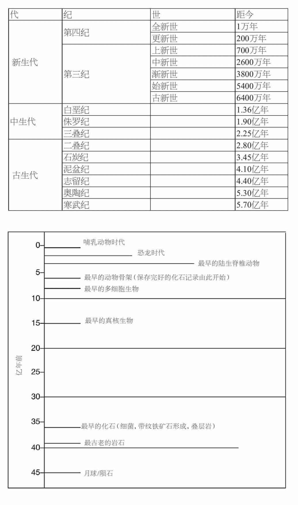
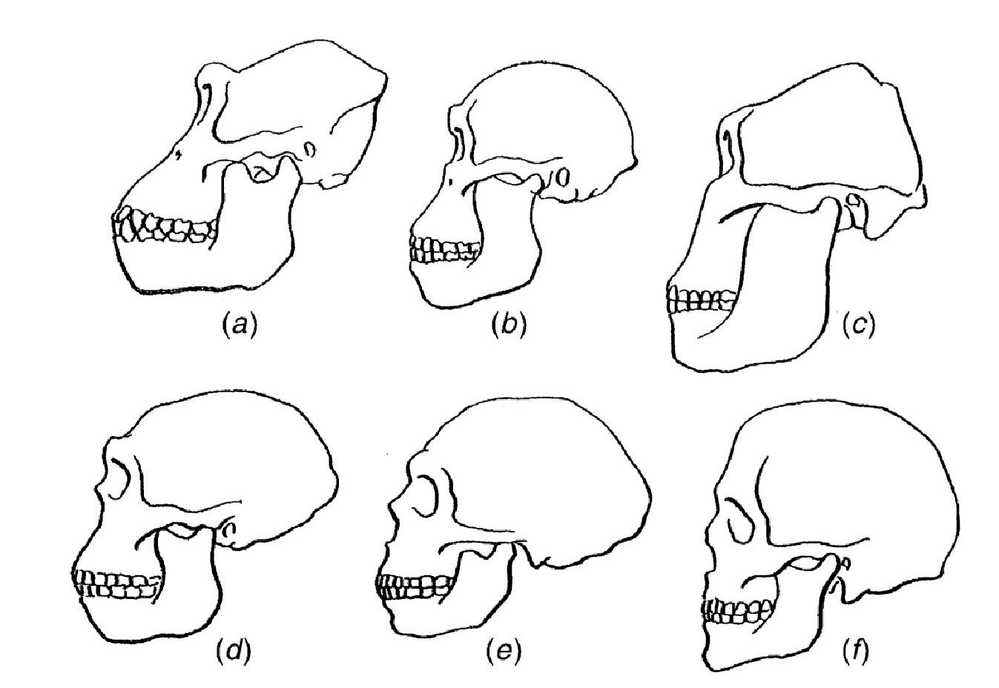
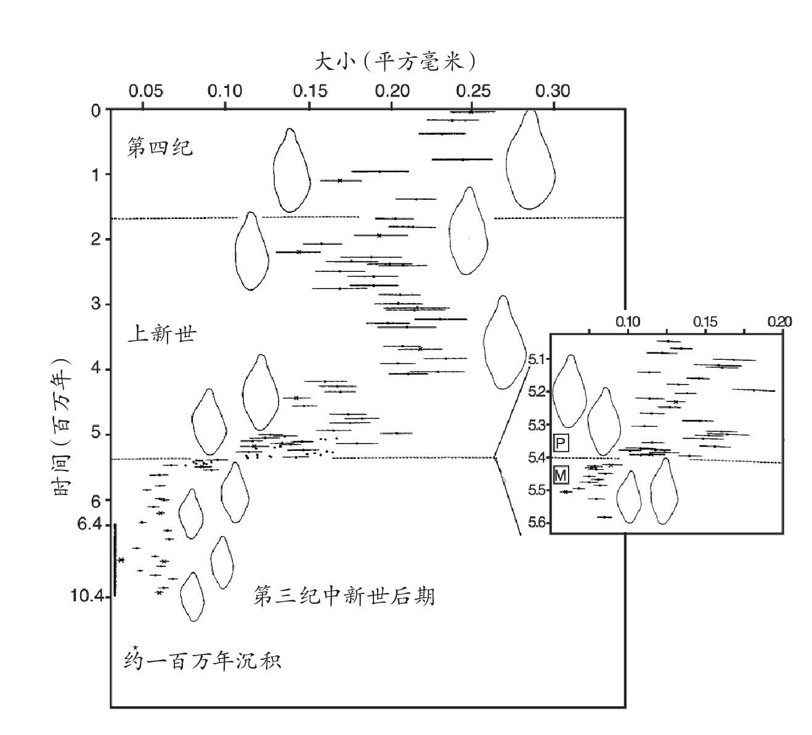
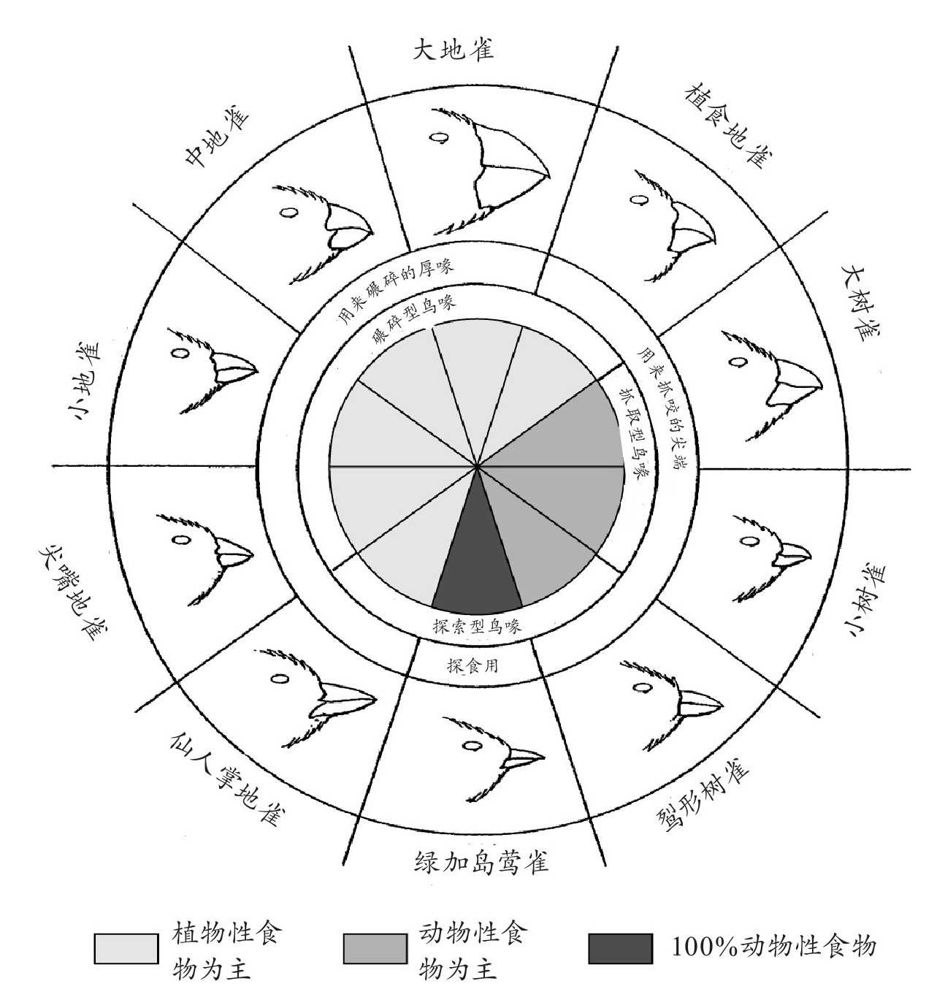
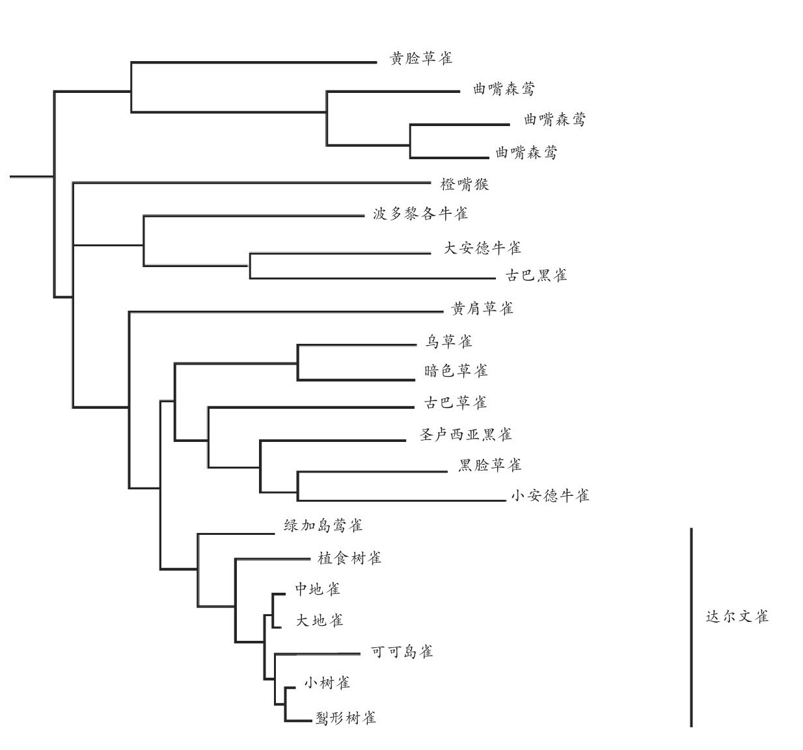

——摘自《论自然力的相互作用》
赫尔曼·冯·亥姆霍兹，1854
地球的年龄
18世纪末19世纪初，地质学家们成功地确认：地球现在的结构是长期不间断物理过程的产物；如果没有这一发现，人们不可能意识到生命由进化产生。其所使用的方法在本质上与历史学家和考古学家们所使用的方法相类似。正如伟大的法国博物学家布丰伯爵在1774年所写的那样：
尽管有把问题过度简单化的风险，两种关键的见解依然为早期地质学带来了成功：均变论 原则，以及采用地层学 划分年代。均变论与18世纪后期爱丁堡的地质学家詹姆斯·赫顿有着紧密的联系，并在之后由另一位苏格兰科学家查尔斯·赖尔在他的著作《地质学原理》（1830）中系统成文。该理论只不过是将天文学家用来理解遥远的恒星与行星的原理应用于地球构造的历史中，即其中所涉及的基本物理过程在任何时间、任何地点，都被认为是相同的。随时间推移而发生的地质变化反映了物理规律的作用结果，而物理规律本身是不变的。例如，物理定律表明，太阳与月亮的引力作用造成的潮汐所带来的摩擦力，必定使地球的转速在数百万年间减慢了。现在一天的时间比地球最初产生时一天的时间要长得多，但引力的大小并没有变化。
当然，并没有独立的证据证明这种均匀性的假设，就像没有任何有逻辑性的证据支持自然界具有规律性的设想，而这一设想正是我们日常生活最基本层面的基础。事实上，这两种假说之间并不存在区别，只是它们所应用的时间与空间尺度不同。它们的支持证据是：首先，均变论代表了可能的基础中最简单的一种，在此基础上我们能够对时间与空间上非常久远的事件进行诠释；其次，它已取得了令人瞩目的成功。
地质学上的均变论假说认为：火山活动及江河湖海的沉积物形成新的岩石，风、水流与冰的作用侵蚀古老的岩石，这些作用的累积结果在当今地球表面的构造中得到了体现。沉积岩 （例如砂岩或石灰岩）的形成有赖于其他岩石的侵蚀。与之相对，火山作用或地震导致陆地上升形成山脉必定发生在岩石被侵蚀前。可以观察到的是，这些过程在今天依然在继续；去过山区的人们，特别是在一年之中冰雪冻结及消融时节去的人们，一定能观察到岩石的侵蚀作用，以及形成的碎片顺着河流被冲到下游。在河口，我们也很容易观察到堆积的沉积物。火山与地震活动局限在地球上某些特定的区域，特别是大陆的边缘和大洋的中心，其原因现在已广为人知，不过火山运动形成新的海岛、地震导致陆地上升的事件记录也为数不少。在《小猎犬号航海记》中，达尔文记录了1835年2月在智利发生的一次地震带来的后果：
依照这些过程，地质学极为成功地解释了地表或地表附近区域地球的结构，同时重建了造成地球上诸多区域如今形态的地质事件。这些事件的先后顺序可以通过地层学的原理进行确定。人们用在不同岩层中发现的矿物成分与化石分布来描述不同岩层的特征。化石是早已死亡的植物和动物被保存下来的残骸而非矿物质形成的人工制品，这一认识是地层学获得成功的关键。在特定的沉积岩层中发现的化石种类能够提供它所形成的时代的环境信息。例如，我们通常可以分辨出该生物是海生、淡水生还是陆生。当然，在花岗岩或玄武岩这类由地壳以下熔融的物质所凝结成的岩石之中，并没有发现化石的踪迹。
19世纪早期，英国的河道工程师威廉·史密斯在走遍大不列颠修筑运河的过程中，发现在大不列颠岛上的不同区域存在相似的岩层变化（对面积如此小的土地来说，其不同时期的岩石种类异乎寻常地多）。基于旧岩层通常位于新岩层之下的原则，不同区域岩层演替的比较使得地质学家能够重建过去极为漫长的时间里岩层依次形成的顺序。如果在一个地点，A岩石位于B岩石之下，而在另一地点B岩石位于C岩石之下，我们可以推出顺序为A-B-C，即便A与C从未在同一个地点被发现。
19世纪的地质学家对这种手段的系统应用使得他们能够确定地质年代的大致分布（图9）。这种分布是一个相对而非绝对的年代表，要确定绝对的时间需要有方法对这个过程中所涉及的每一步的速率进行校正，而这样做是极为困难的，且不说精度如何。景观形成的过程十分缓慢，岩石的侵蚀每发生几毫米都需要许多年时间，沉积岩的形成也相应地十分缓慢。与之相似，即使在造山运动最活跃的区域，例如安第斯山脉，陆地上升的速率也不过是平均每年零点几米。在地球上的许多地方，由上述方式形成的沉积岩已经有数千公里的深度，且有证据表明，被侵蚀的沉积物也与之相去不远——鉴于这些，人们很快意识到，地球存在的时间至少得有数千万年，这与《圣经》所记载的年表是矛盾的。赖尔在此基础上提出：第三纪持续了约8000万年，而寒武纪则开始于2.4亿年之前。杰出的物理学家开尔文勋爵并不同意地球具有如此长的历史，他认为，如果地球真的已形成超过一亿年，那么最初那个熔融状态的地球的冷却速率将使得地球的中心比它实际上的温度要低很多。开尔文的计算在当时的物理学背景下是正确的。然而，在19世纪末，人们发现了不稳定的放射性元素——例如铀，能够衰变成为更为稳定的衍生物。这个衰变过程伴随着能量的释放，这些能量足以使得地球的冷却速率减慢，直至与它当前的预测年龄相符的数值。

图9 地质年表的大致划分。上表展示了寒武纪以来的各个被命名的时代，在这个时间段里，发现的化石数量最多（而它占地球年龄不到1/8）。 [1] 下表展示了地球历史上发生的重要事件。
放射性也为确定岩石样本的年代提供了全新而可靠的手段。放射性元素原子衰变成为更为稳定的子元素，并释放出辐射，这一速率是每年恒定的。当岩石产生时，可以假设其中我们所关注的元素是单一的；而后，当我们检测到样本中衰变所获得的子元素的比例，如果通过实验知晓衰变的速率，我们就能够估计这块岩石的形成时间。不同的元素可以用来测定不同时期的岩石。通过这一技术可以确定不同地质年代岩石的年代，这为我们提供了如今所公认的时间节点。尽管方法经常更新，而所确定的时间点也在不断地修正，但它们所预测的大致时间序列十分清晰（图9）。它为生物进化的发生，划定了一个广阔到不可思议的时间范围。
化石记录
化石记录是生命历史留给我们的唯一直接的信息来源。为了正确地对其进行诠释，我们需要了解化石是如何形成的，以及科学家们如何对化石进行研究。在植物、动物或者微生物死亡后，它们的柔软部分几乎一定会迅速降解。只有在某些特殊的环境中，例如沙漠干燥的空气中或是琥珀具有保护作用的化学物质里，负责降解的微生物才不能对这些软组织进行分解。人们发现了许多值得关注的保存软组织的例子，有些甚至可以追溯到几千万年之前，例如被困在琥珀中的昆虫。但是，这些与其说是规律不如说是例外。甚至连骨架结构，例如昆虫与蜘蛛体外覆盖的坚硬几丁质，或是脊椎动物的骨骼与牙齿，最后都会被降解。不过，它们降解的速率相对更慢一些，这让矿物质有机会渗透其中，最终取代其中的有机物（这种现象有时也发生在软组织之中）。若非如此，它们也许会形成一个具有它们的轮廓、被沉积的矿物质包围的空壳。
化石最有可能在水生环境中形成。在江河湖海的底层，矿物质沉淀、沉积物形成。尽管对于某个特定个体，形成化石的几率非常小，但沉到底层的残骸仍有机会变为化石。因此化石记录的结果存在非常大的偏差：生活在浅海的海洋生物，由于沉积物不断形成，其化石记录是最好的，而飞行生物的化石记录则最糟糕。此外，沉积物的形成可能会被打断，例如气候变化或者海底抬升。对于许多类型的生物，我们几乎没有它们的化石记录；而对于其他一些生物，化石记录曾经中断过许多次。
对于这种被中断的不完整性带来的问题，腔棘鱼是一个很好的例证。这是一种拥有分裂鱼鳍的硬骨鱼类，它的祖先是最早登上陆地的脊椎动物。腔棘鱼在泥盆纪时期（4亿年前）曾大量存在，但是随后就逐渐减少。距今最近的腔棘鱼化石要追溯到约6500万年前，很长时间以来，人们都认为这类生物已经灭绝了。直到1939年，非洲东南海上科摩罗群岛的渔民捕获了一只长相怪异的鱼，最后人们发现它就是腔棘鱼。于是随后科学家们能够对活腔棘鱼的习性进行研究；而在印度尼西亚，人们又发现了一个新的腔棘鱼群。腔棘鱼在一段极为漫长的时间里一定都存在着，但是并没有留下任何化石证据，因为它们的数量很少，而且生活在海洋的深处。
化石记录的中断意味着人们很难找到一系列长时间不间断的生物遗迹，以此展现进化的假说所需要的或多或少的连续变化。在大多数的例子中，新种类的动植物在化石中第一次出现时都没有表现出与它们早期形态存在任何显著的关联。最著名的例子是“寒武纪大爆发”：大部分重要类别的动物，作为化石首次出现都集中在寒武纪时期，即5.5亿至5亿年前（这部分将在第七章中再次讨论到）。
不过，正如达尔文在《物种起源》中所坚决主张的，化石记录的基本特性为进化提供了有力的证据。自达尔文的时代以来，古生物学家们的发现一次又一次地巩固了他的论述。首先，人们发现了许多过渡物种的实例，这些物种将原先被认为中间有着不可逾越鸿沟的物种连接起来。始祖鸟也许是其中最著名的生物，在《物种起源》一书出版后不久，人们发现了这种既像鸟又像爬行动物的物种的化石。始祖鸟化石非常罕见（现存只有六个样品）。它们来自于约1.2亿年 [2] 前侏罗纪时期的石灰岩，这种岩石沉睡在德国一个大湖湖底。这些生物有着被拼接起来的特征，有些特征像现代的鸟类，例如羽毛与翅膀，而有些又像爬行动物，例如长着牙齿的颚（而不是像鸟一样的喙），以及长长的尾巴。它们的骨架结构中很多细节都与同时期的恐龙极为相似，但是始祖鸟很明显会飞，这一点又与恐龙有所不同。随后，人们又发现了其他将恐龙与鸟类联系起来的化石，最近人们又发现了在始祖鸟之前还存在过长着羽毛的恐龙。其他重要的中间类型包括来自始新世（约6000万年 [3] 前）的哺乳动物化石，这些动物拥有前肢及简化的后肢以适应游泳。它们连接了现代的鲸类与偶蹄目食草动物例如牛和羊。
随着人们取得越来越多的研究成果，许多化石记录的间断被填平了，对人类的研究就是一个很好的例证。在1871年达尔文关于人类进化的著作《人类起源》第一次出版时，人们尚未发现任何人类与猿之间相联系的化石证据。达尔文基于解剖学上的相似性，认为人类与大猩猩及黑猩猩之间的关系最为紧密，因此人类可能起源于非洲的祖先，而这些祖先同样也进化成为如今的猿类。在此之后，人们发现了一系列的化石证据，通过前文所述方法精准地确定了其年代，而后新的化石证据被持续发现。这些化石中，距今越近的化石与现代人类越相似（图10）。能被明显地归入智人物种的最早化石被确定产生于距今只有几十万年之前。与达尔文的推断相一致的是，早期人类的进化很可能发生在非洲，而我们的祖先们可能在约150万年前首次抵达了欧亚大陆。
在时间序列上几乎不间断的化石例证也同样存在，由此可以确定，我们能够发现在进化上呈现单一谱系变化的化石记录。对海底沉积物挖掘结果的研究是最好的例证，从这类挖掘之中，我们能够获得很长的岩层序列。这些岩石的主体由数不胜数的微生物化石组成，而上述研究使得我们能够精确判定这些微生物连续样本的形成年代。对这些生物（例如有孔虫目，一种单细胞海洋动物）骨骼外形的仔细测定使我们能够描述，在一段漫长时间里渐次演替的种群在总体水平与变化程度方面的特征（图11）。

图10 某些人类祖先与近亲的头骨。（a）雌性大猩猩。（b）和（c）人类最早的近亲之一——南方古猿的两种不同化石（约300万年前）。（d）南方古猿与现代直立人之间的中间物种的化石。（e）尼安德特人的化石，距今约7万年。（f）现代人——智人。
如果没有进化学说的支持，人们很难理解化石记录的基本特性，更不用说解释化石记录中过渡物种的存在。尽管寒武纪之前的化石记录非常不完整，但依然保存有超过35亿年前的细菌及与其相关的单细胞生物的遗骸。再经过很长一段时间，出现了更为高级的（真核生物）细胞的遗迹，但依然未发现多细胞生物出现的证据。由简单细胞群构成的生物直到约8亿年前才出现，在那个时期环境极其恶劣，地球上的大部分被冰雪覆盖。约7亿至5.5亿年前，有证据表明出现了有着柔软身体的多细胞动物。

图11 化石中进化的渐变。此图展示了一种单细胞海洋甲壳动物——有孔虫化石样品中身体大小的均值与范围。在这个谱系之中，除了两个明显的间断点外，身体大小顺次变化。在第三纪中新世后期与上新世的交界点，一组更为确切的化石（见小图）说明了那些较为粗略的化石中所观察到的不连续几乎完全反映了一段剧烈变化时期，因为大部分连续的样本都彼此重叠。对于400万年前的间断点，迄今为止还未发现化石信息。
正如前文中提到的，拥有硬质骨骼的动物遗骸直到5.5亿年前的寒武纪岩石中才被大量发现。在约5亿年前的寒武纪末期，有证据表明几乎出现了所有主要的动物类群，包括原始的像鱼一样的脊椎动物，这种动物缺少上下颌，类似现代的七鳃鳗。
直到这个时期，所有的生物都与海洋沉积物有关，而藻类是唯一有遗骸的植物，它没有陆地多细胞植物输送液体所需要的导管。4.4亿年前，有证据表明出现了淡水生物，而后孢子化石的发现表明最早的陆生植物开始出现，类似鲨鱼的有颌鱼出现在海洋之中。在泥盆纪时期（4亿-3.6亿年前），淡水与陆生生物遗骸变得更为普遍与多样化。有证据表明原始的昆虫、蜘蛛、螨虫与多足动物开始出现，同样也出现了简单的维管束植物以及真菌。有颌的硬骨鱼类也逐渐变得普遍，其中就包括肉鳍鱼类，它与出现在泥盆纪末期类蝾螈的早期两栖动物结构相似。这些是最早的陆地脊椎动物。
在地质记录的下一个时期，石炭纪（3.6亿-2.8亿年前），陆地生物形态变得丰富且多样化。在热带沼泽之中生长的树状植物的遗骸化石形成了煤炭沉积，这也是这个时期命名的由来，这种植物更类似于同时期的杉叶藻与蕨类，与当代的针叶树或阔叶树没有关系。在泥盆纪的末期，原始爬行动物的遗骸出现，这是第一种完全脱离水的脊椎动物。在二叠纪时期（2.8亿-2.5亿年前），爬行动物出现了一个巨大的分化，有些的结构特点与哺乳动物日益相似（似哺乳爬行动物）。一些现代的昆虫类型，例如臭虫、甲壳虫，开始出现。
在化石记录中可以发现，二叠纪末期出现了最大规模的生物灭绝，一些之前占据优势地位的物种例如三叶虫突然完全消失，许多其他物种也几乎完全消失。在之后的恢复期，在海洋中与陆地上出现了许多新的物种。与现代的针叶树和阔叶树相似的植物在三叠纪时期（2.5亿-2亿年前）出现。恐龙、龟以及原始的鳄鱼出现了；就在三叠纪的末期，出现了最早的真正意义上的哺乳动物。与先驱们不同，它们的下颌含有一块与头盖骨直接相连的骨头（在爬行动物中组成这个连接的三块骨头进化成为哺乳动物耳朵里的三块听小骨，见第3章，第15页）。与现代鱼类相似的硬骨鱼类在海洋中出现了。在侏罗纪时期（2亿-1.4亿年前），哺乳动物开始或多或少地分化，但是陆地依然被爬行动物，特别是恐龙所统治。会飞的爬行动物与始祖鸟类出现了。苍蝇与白蚁首次出现，在海洋中出现了蟹类与龙虾。直到白垩纪时期（1.4亿-6500万年前），有花植物才进化出现——它们是主要生物中最晚进化出现的。现代主要的昆虫类型在这个时期都出现了。有袋类哺乳动物（有袋目）在白垩纪中期出现，与现代胎盘哺乳动物相似的类型在白垩纪末期也被发现。恐龙依然数量庞大，尽管在这个时期行将结束时出现了减少。
伴随着白垩纪的结束是史上最著名的物种灭绝事件，与一颗在墨西哥尤卡坦半岛着陆的小行星有关。所有的恐龙（除了鸟类）都消失了，一同消失的还有许多曾经在陆地与海洋中普遍存在的生物。接下来便是第三纪，它一直延续到大冰河世纪（约200万年前）的到来。在第三纪的第一阶段（6500万-3800万年前），胎盘哺乳动物的主要类型出现。最初，它们多半与现代的食虫类动物例如鼩鼱相似，但是在这个时代的末期，其中的一些变得相当独特（例如我们能够辨认出鲸与蝙蝠）。大多数的主要类别的鸟类与现代的无脊椎动物在这个时期出现，除了禾本科之外的所有主要有花植物也出现了。与现代种类基本一致的硬骨鱼数量增多。在3800万至2600万年前之间出现了草原，同样也出现了类马的食草动物，它们拥有三个趾头，而不是现代马的单个趾头。原始的猿类同样出现了。2600万至700万年前，在北美出现了大片的草原，拥有短侧脚趾与高冠齿、适应食草的马类出现。许多有蹄类动物，例如猪、鹿与骆驼，还有大象也开始出现。猿与猴子分化越来越大，尤其是在非洲。在700万至200万年前，海洋生物本质上较为接近现代，尽管其中很多物种如今已经灭绝。在此时期，出现了最早的具有明显人类特征的动物遗骸。在第三纪的末期（200万-1万年前），是一连串的冰河世纪。大多数的动植物基本具备现代形态。最后一个冰河世纪的末期（1万年前）至今，人类统治了陆地，许多大型哺乳动物开始灭绝。一些化石证据证明了这个时期的进化改变，例如在海岛上许多大型哺乳动物的矮型种的进化。
因此，化石记录表明生命起源于30亿年前的海洋，在10亿多年中，只存在着与细菌相关的单细胞生物。这正是进化模型所预期的；将基因编码转化成为蛋白质序列所需的装置，以及哪怕是最简单细胞的复杂结构，它们的进化必定需要许多步骤，其具体过程几乎超出了我们的想象。之后化石记录中出现的真核细胞的明显证据，以及它们总体上比原核细胞更为复杂的结构，与进化论也是相一致的。这同样适用于多细胞生物，从单个细胞发育而来的它们需要精密的信号传递机制以控制生长与分化，而这些在单细胞物种出现之前不可能进化出现。一旦简单的多细胞生物进化形成，可以理解的是它们会迅速分化成为各种形态，以适应不同生存类型，正如寒武纪所发生的那样。我们将在下一章讨论适应与分化。
从进化的角度来看，生命在相当长的一段时间里只属于海洋这个事实也变得很好理解。在地球历史的早期，有地质证据表明大气层中的氧气非常稀薄，于是缺少了由氧形成、能够阻挡紫外线的臭氧层，使得陆地甚至淡水中的生物很难存活。一旦早期细菌与藻类的光合作用导致氧含量变得充足，这一重障碍便消失了，于是生物开始有可能涉足陆地。有证据表明在寒武纪之前一段时间大气中的氧气含量出现了上升，这也许促进了更大且更多的复杂动物的进化。同理可知，会飞的昆虫与脊椎动物化石在陆地动物之后出现也是理所当然的，因为真正的飞行动物不大可能从纯粹的水生生物进化而来。
从进化学角度分析，生物类型周期性地增多与分化，之后又大规模地灭绝（三叶虫与恐龙的遭遇）或减少至一两个幸存种（如腔棘鱼类），这一现象同样合乎情理。进化的机制并没有前瞻性，也不能保证它们的产物能够从巨大而突然的环境变化中幸存。同理可知，在进入一个新的栖息地后（例如入侵陆地），或是在一个占据优势的竞争种灭绝之后（例如在恐龙灭绝之后的哺乳动物），物种的迅速分化也符合进化原则的预期。
因此，基于生物学知识对化石记录的解释符合地质学家应用于地球历史的均变论原则。化石证据也可能存在一些不符合进化论的实例。据说，伟大的进化学家与遗传学家霍尔丹在被问到什么样的观测结果会让他放弃对进化论的信念时曾回答道：“一只寒武纪之前的兔子。”迄今为止，还未发现此类化石。
空间上的印记
正如达尔文在《物种起源》的十五章中花费两章内容所描述的，另一组只有基于进化论才能解释的重要事实来自生物的空间而非时间的分布。其中最惊人的例证之一是那些海岛（例如加拉帕戈斯群岛与夏威夷群岛）上的动植物们。有地质证据证明这些群岛是由火山运动形成的，它们从未与大陆相连。根据进化理论，这种群岛上现存的生物一定是那些能够穿越这些新近形成的海岛与最近的已居住海岛之间遥远距离的生物的后代。这对我们可能观测到的结果造成了一些限制。首先，外来物种要在新形成的岛屿上定居，其难度可想而知，这意味着很少有物种能够生存下来。其次，只有那些具备某些特征，能够穿越数万海里大洋的物种才能最终扎根。第三，即使在这些能够扎根的物种之中，也存在着许多不确定因素，因为能够到达岛上的物种数量极少。最后，在如此偏远的岛屿之上，进化所能形成的许多类型在其他地方都不可能出现。
这些设想都被很好地验证了。与有着相似气候的大陆或沿海岛屿相比，海岛上主要生物群的种类的确相对较少。在海岛上发现的生物种类（在人类进驻之前），是其他地区的非典型物种。例如，岛上通常具有爬行动物与鸟类，而陆地哺乳动物与两栖动物总是不存在。在新西兰，在人类进驻之前这里没有陆地哺乳动物，不过存在着两种蝙蝠。这说明蝙蝠能够横跨辽阔的海洋。在人类将许多物种引入之后，它们的疯狂蔓延说明当地的环境并非不适合它们生存。但即使是当地主要的动植物群，也经常出现整个群体消失的情况，而其他存活的物种也通常不成比例。因此，在加拉帕戈斯群岛上，陆地鸟类的种类只有20多种，其中14种是雀科鸟类，这些著名的雀类在达尔文搭乘小猎犬号环游世界时被记载在他的旅行手记中。这与地球上其他地区的情况不同，在其他区域雀类只是陆地鸟类中一个很小的组成部分。这正符合我们之前的预期：最初，只有很少种类的鸟类进驻这个岛屿，其中的一种为雀类，而它们成为了如今雀类物种的祖先。
正如这种观点所预期的，海岛的物种有着许多属于自身独一无二的特性，与此同时它们也表现出与大陆物种之间的联系。例如，在加拉帕戈斯群岛上发现的植物种类中，有34%的物种从未在其他地区出现过。达尔文雀类的鸟喙大小与外形也比一般的鸟儿（通常拥有大而深的鸟喙，主要吃种子）要远为多样化，它们显然适应于不同的捕食模式（图12）。这些鸟喙中有些相当不同寻常，例如有着尖锐鸟喙的尖嘴地雀喜欢啄食筑巢海鸟的臀部，吸食它们的血液。形树雀使用小树枝或仙人掌刺获取枯木中的昆虫。更为壮观的疯狂进化例证来自海洋岛屿中的其他类群。例如，夏威夷岛上的果蝇种类数量超过世界上其他任何地方，而它们在身体大小、翅膀样式以及进食习惯方面差异巨大。

图12 达尔文雀类的鸟喙，展示了不同食性的物种的鸟喙在大小与形状上的差异。
如果这些海岛物种的祖先首次进入此岛屿时，发现这个环境里没有已经到达的竞争者，这些观察结果就容易理解了。这种情况将会容许它们进化出与新的生活方式相适应的特性，使得原先的物种分化成为几种不同的后代。尽管在达尔文雀类中发现了许多不同寻常的结构与行为上的变异，但采用第三章与第六章的方法对它们的DNA进行的研究表明，这些物种在约230万年前有着共同的祖先，与大陆的物种亲缘关系也非常接近（图13）。
正如达尔文在《物种起源》一书中描述加拉帕戈斯群岛上的居住者时所写到的：

图13 达尔文雀类与它们近亲的系统发育树。这棵发育树是基于不同物种线粒体中一段基因的DNA序列的差异。水平分支的长度说明不同物种间差异的大小（从最接近物种的0.2%到最疏远物种的16.5%）。系统发育树表明加拉帕戈斯群岛上的物种很显然有一个共同的祖先，它们都有着相似序列的这个基因，与距今很近的祖先的序列相一致。与之相对的是，其他具有亲缘关系的雀类物种彼此间的差异要大得多。
毫无疑问，进化论为这些问题提供了解释，在过去的150年里对海岛生物的研究已经充分证明了达尔文的高瞻远瞩。